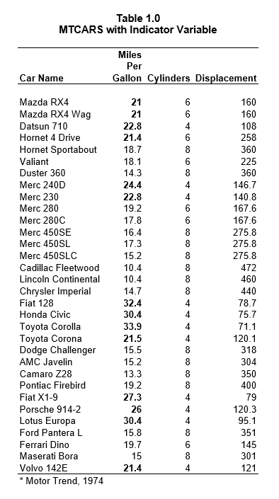

Styles and Themes
The reporter package now supports styles and themes for HTML reports. Styling for more output types will be supported in future versions.
Custom Style
To create a custom style, use the create_style()
function. This function allows you to control colors and bolding for
many common elements of a report. The create_style()
function returns a style object, which can then be passed to the style
parameter of the add_style() function. Here is an example
of a custom style:
library(reporter)
# Create temporary path
tmp <- file.path(tempdir(), "example12a.html")
# Read in prepared data
df <- read.table(header = TRUE, text = '
var label A B
"ampg" "N" "19" "13"
"ampg" "Mean" "18.8 (6.5)" "22.0 (4.9)"
"ampg" "Median" "16.4" "21.4"
"ampg" "Q1 - Q3" "15.1 - 21.2" "19.2 - 22.8"
"ampg" "Range" "10.4 - 33.9" "14.7 - 32.4"
"cyl" "8 Cylinder" "10 ( 52.6%)" "4 ( 30.8%)"
"cyl" "6 Cylinder" "4 ( 21.1%)" "3 ( 23.1%)"
"cyl" "4 Cylinder" "5 ( 26.3%)" "6 ( 46.2%)"')
# Create custom style
sty <- create_style(font_name = "Arial",
font_size = 10,
background_color = "WhiteSmoke",
border_color = "Grey",
title_font_size = 12,
title_font_bold = TRUE,
title_font_color = "SteelBlue",
table_header_background = "Tan",
table_header_font_bold = TRUE,
table_header_font_color = "White",
table_body_background = "White",
table_body_stripe = "Wheat",
table_stub_background = "Tan",
table_stub_font_color = "White",
table_stub_font_bold = TRUE
)
# Create table
tbl <- create_table(df, first_row_blank = TRUE, borders = c("all")) %>%
stub(c("var", "label")) %>%
column_defaults(width = 1.25) %>%
define(var, blank_after = TRUE, label_row = TRUE,
format = c(ampg = "Miles Per Gallon", cyl = "Cylinders")) %>%
define(label, indent = .25) %>%
define(A, label = "Group A", align = "center", n = 19) %>%
define(B, label = "Group B", align = "center", n = 13) %>%
titles("Table 1.0", "MTCARS Summary Table with Custom Style",
borders = "none") %>%
footnotes("* Motor Trend, 1974", borders = "outside")
# Create report and add custom style
rpt <- create_report(tmp, output_type = "HTML", font = "Arial") %>%
add_content(tbl) %>%
add_style(sty)
# Write out report
write_report(rpt)
# View report
# file.show(tmp)
Themes
A Theme may be applied to a report using the function
add_style() and passing a theme name to the theme
parameter. Currently there are seven themes available: “MidnightBlue”,
“SteelBlue”, “DarkRed”, “SeaGreen”, “SlateGrey”, “Plain”, and
“SASDefault”. Here is an example using a named theme:
library(reporter)
# Create temporary path
tmp <- file.path(tempdir(), "example12b.html")
# Read in prepared data
df <- read.table(header = TRUE, text = '
var label A B
"ampg" "N" "19" "13"
"ampg" "Mean" "18.8 (6.5)" "22.0 (4.9)"
"ampg" "Median" "16.4" "21.4"
"ampg" "Q1 - Q3" "15.1 - 21.2" "19.2 - 22.8"
"ampg" "Range" "10.4 - 33.9" "14.7 - 32.4"
"cyl" "8 Cylinder" "10 ( 52.6%)" "4 ( 30.8%)"
"cyl" "6 Cylinder" "4 ( 21.1%)" "3 ( 23.1%)"
"cyl" "4 Cylinder" "5 ( 26.3%)" "6 ( 46.2%)"')
# Create table
tbl <- create_table(df, first_row_blank = FALSE, borders = "all") %>%
stub(c("var", "label")) %>%
column_defaults(width = 1.25) %>%
define(var, blank_after = TRUE, label_row = TRUE,
format = c(ampg = "Miles Per Gallon", cyl = "Cylinders")) %>%
define(label, indent = .25) %>%
define(A, label = "Group A", align = "center", n = 19) %>%
define(B, label = "Group B", align = "center", n = 13) %>%
titles("Table 1.0", "MTCARS Summary Table with SteelBlue Theme",
borders = "none") %>%
footnotes("* Motor Trend, 1974", borders = "outside")
# Create report and add theme
rpt <- create_report(tmp, output_type = "HTML", font = "Arial",
font_size = 12) %>%
set_margins(top = 1, bottom = 1) %>%
add_content(tbl) %>%
add_style(theme = "SteelBlue")
# Write out report
write_report(rpt)
# View report
# file.show(tmp)
View/Modify a Theme
Sometimes you may want to look at or modify an existing theme. The
function get_theme() allows you to do this. Simply pass the
theme name to get_theme() and it will return the theme as a
style object. From there you can print the style object to see how it
was defined. You can also modify it to suit your own preferences. Here
is an example of how to view and modify a theme.
library(reporter)
library(magrittr)
tm <- get_theme("SteelBlue")
print(tm)
# # A style specification:
# - font_name: 'Arial'
# - font_size: 10
# - text_color: 'DimGrey'
# - title_font_size: 11
# - title_font_bold: TRUE
# - title_font_color: 'SteelBlue'
# - border_color: 'Grey'
# - table_header_background: 'SteelBlue'
# - table_header_font_bold: TRUE
# - table_header_font_color: 'LightGrey'
# - table_body_background: 'White'
# - table_body_stripe: 'WhiteSmoke'
# - table_stub_background: 'SteelBlue'
# - table_stub_font_color: 'LightGrey'
# - table_stub_font_bold: TRUE
# Modify theme
tm$table_stub_background <- "Orange"
tm$table_stub_font_color <- "White"
# Create temporary path
tmp <- file.path(tempdir(), "example12c.html")
# Read in prepared data
df <- read.table(header = TRUE, text = '
var label A B
"ampg" "N" "19" "13"
"ampg" "Mean" "18.8 (6.5)" "22.0 (4.9)"
"ampg" "Median" "16.4" "21.4"
"ampg" "Q1 - Q3" "15.1 - 21.2" "19.2 - 22.8"
"ampg" "Range" "10.4 - 33.9" "14.7 - 32.4"
"cyl" "8 Cylinder" "10 ( 52.6%)" "4 ( 30.8%)"
"cyl" "6 Cylinder" "4 ( 21.1%)" "3 ( 23.1%)"
"cyl" "4 Cylinder" "5 ( 26.3%)" "6 ( 46.2%)"')
# Create table
tbl <- create_table(df, first_row_blank = FALSE, borders = "all") %>%
stub(c("var", "label")) %>%
column_defaults(width = 1.25) %>%
define(var, blank_after = TRUE, label_row = TRUE,
format = c(ampg = "Miles Per Gallon", cyl = "Cylinders")) %>%
define(label, indent = .25) %>%
define(A, label = "Group A", align = "center", n = 19) %>%
define(B, label = "Group B", align = "center", n = 13) %>%
titles("Table 1.0", "MTCARS Summary Table with Modified Theme",
borders = "none") %>%
footnotes("* Motor Trend, 1974", borders = "outside")
# Create report and add modified theme
rpt <- create_report(tmp, output_type = "HTML", font = "Arial",
font_size = 12) %>%
set_margins(top = 1, bottom = 1) %>%
add_content(tbl) %>%
add_style(style = tm)
# Write out report
write_report(rpt)
# View report
# file.show(tmp)


Cell Styles
To modify styles for a particular cell in a table, use the
cell_style() object. The cell_style() object
can be passed into the style parameter on the define(),
stub(), or column_defaults() functions. This
object has parameters to set available style settings, and an indicator
parameter to specify which rows to apply the style to. The indicator can
be one of four values:
- labelrow: Applies the style to all label rows.
- blankrow: Applies the style to all blank rows.
- datarow: Applies the style to all rows that are not label rows or blank rows.
- [variable name]: Applies the style to all rows that have a TRUE value in a specified variable on the incoming dataset.
First let’s look at an example to set the label rows bold:
library(reporter)
# Create temporary path
tmp <- file.path(tempdir(), "example12j.rtf")
# Read in prepared data
df <- read.table(header = TRUE, text = '
var label A B
"ampg" "N" "19" "13"
"ampg" "Mean" "18.8 (6.5)" "22.0 (4.9)"
"ampg" "Median" "16.4" "21.4"
"ampg" "Q1 - Q3" "15.1 - 21.2" "19.2 - 22.8"
"ampg" "Range" "10.4 - 33.9" "14.7 - 32.4"
"cyl" "8 Cylinder" "10 ( 52.6%)" "4 ( 30.8%)"
"cyl" "6 Cylinder" "4 ( 21.1%)" "3 ( 23.1%)"
"cyl" "4 Cylinder" "5 ( 26.3%)" "6 ( 46.2%)"')
# Create table
tbl <- create_table(df, first_row_blank = TRUE, borders = c("all"),
header_bold = TRUE) %>%
stub(c("var", "label"),
style = cell_style(bold = TRUE, indicator = "labelrow")) %>%
column_defaults(width = 1.25) %>%
define(var, blank_after = TRUE, label_row = TRUE,
format = c(ampg = "Miles Per Gallon", cyl = "Cylinders")) %>%
define(label, indent = .25) %>%
define(A, label = "Group A", align = "center", n = 19) %>%
define(B, label = "Group B", align = "center", n = 13) %>%
titles("Table 1.0", "MTCARS Summary Table with Cell Style",
borders = "none", bold = TRUE, font_size = 11) %>%
footnotes("* Motor Trend, 1974", borders = "none", blank_row = "none")
# Create report and add custom style
rpt <- create_report(tmp, output_type = "RTF", font = "Arial") %>%
add_content(tbl)
# Write out report
write_report(rpt)
# View report
# file.show(tmp)
When a variable name is passed as the indicator value, this variable should exist on the input dataset. The indicator column should have TRUE or FALSE values for each row where you want the style applied. This feature gives you complete control over cell styling.
Now let’s look at and example of setting a style on a variable based on the variable value:
library(reporter)
# Create temporary path
tmp <- file.path(tempdir(), "example12k.rtf")
# Prepare data
df <- data.frame(names = rownames(mtcars), mtcars[, 1:3])
# Set style indicator variable
df$mpgind <- ifelse(df$mpg > 20, TRUE, FALSE)
# Create table
tbl <- create_table(df, first_row_blank = TRUE,
header_bold = TRUE, borders = c("top", "bottom")) %>%
define(names, label = "Car Name") %>%
define(mpg, label = "Miles Per Gallon",
style = cell_style(bold = TRUE, indicator = "mpgind")) %>%
define(cyl, label = "Cylinders") %>%
define(disp, label = "Displacement") %>%
define(mpgind, visible = FALSE) %>%
titles("Table 1.0", "MTCARS with Indicator Variable",
borders = "none", bold = TRUE, font_size = 11) %>%
footnotes("* Motor Trend, 1974", borders = "none", blank_row = "none")
# Create report and add custom style
rpt <- create_report(tmp, output_type = "RTF", font = "Arial") %>%
add_content(tbl)
# Write out report
write_report(rpt)
# View report
# file.show(tmp)
Note that cell styling is available for all output types except TXT.
Also note that the cell_style() object currently only
supports “bold” styling. More styling options will be added in future
releases of reporter.